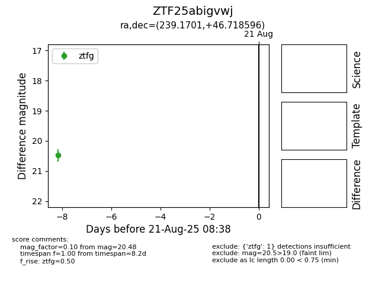

Target ZTF25abigvwj at 2025-08-21 08:38, see:
FINK: fink-portal.org/ZTF25abigvwj
Lasair: lasair-ztf.lsst.ac.uk/objects/ZTF25abigvwj
ALeRCE: alerce.online/object/ZTF25abigvwj
alt names
ZTF25abigvwj (ztf,alerce)
coordinates:
equatorial (ra, dec) = (239.1701,+46.71860)
galactic (l, b) = (73.9995,+48.88760)
photometry
last ztfg=20.48
1 ztfg detections
